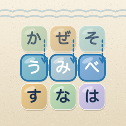

落ちる先が見える言葉消し
消す前に、字の落ちる先が見える。なぞって言葉を消すと上の字が落ちてくる、言葉のパズルです。
ひらがな・カタカナの字のかけらが積まれた盤から、お題（「くだもの」「のりもの」など）に合う言葉を、たて・よこにつながる字を指でなぞって消します。消すと上の字が落ちてつまります。お題の言葉を全部消して、盤を空にするとクリアです。
- 落ちる先の透かし。なぞっている間、その字を消したら上の字がどこへ落ちるかを、青い影と下向きの点線で見せます。指を離す前に、消す順を考えられます
- どの面も、全部消せます。240 面は、どれも全部の言葉を消して盤を空にできる順が少なくとも1つあることを、作るときに計算で確かめてあります
- 作れなくなったら、その場で。消す順のせいで、のこりの言葉の字がつながらなくなったら、すぐに知らせます。「1手もどす」で何回でも前にもどれます。設定で、消す前に知らせることもできます
- 4×4 から 6×7 までの 240 面、お題 24、言葉 700 ほど。言葉はどれも、お題ごとに選んだふだんの言葉です
- ヒント（次に消しても大丈夫な言葉の1字目・道）、消した言葉が漢字の書き方と並ぶ「ことば帳」、花丸の印と記録
- 登録・課金・ライフ・待ち時間はありません。記録はこの端末の中だけに保存します。画面のいちばん下に小さな広告が出ます（画面いっぱいの広告・動画の広告は出しません）